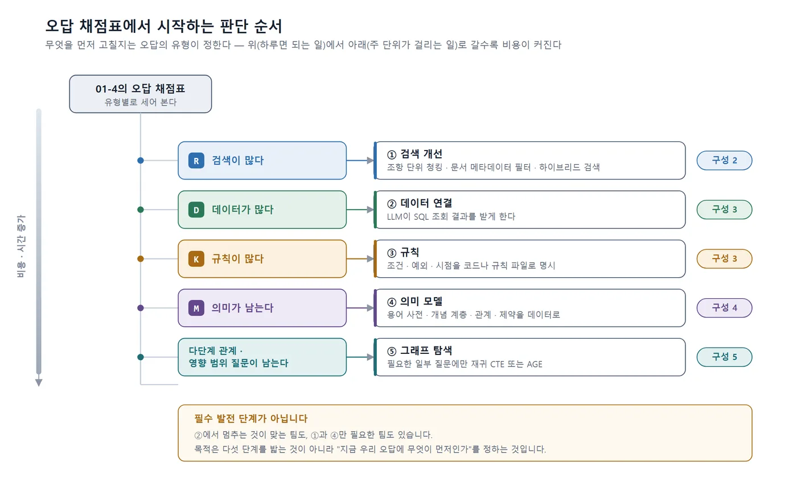

[참고] 개념·설계 설명 — 예제는 ontology-tutorial 저장소의 노트클라우드 데이터 기준
이 책의 중심 질문
이 책을 쓰게 된 질문이 바로 이것이었습니다. 세무 상담을 자동화하려는데 온톨로지가 필요한가, PostgreSQL을 잘 설계하면 되지 않는가. 솔직한 답은 "질문에 따라 다르다"이고, 이 절은 그 "따라 다르다"를 노트클라우드의 질문 30개로 구체화합니다. 결론부터 말하면 30개 중 상당수는 잘 설계한 DB와 SQL로 충분하고, 몇 개는 DB를 아무리 잘 설계해도 DB만으로는 안 되며, 그 몇 개가 어떤 모양인지를 알아보는 눈이 이 절의 목표입니다.
정규화된 DB가 답할 수 있는 질문과 없는 질문
02-2의 스키마에 고객·요금제·장애·팀 구성원 테이블까지 갖춘 잘 정규화된 DB가 있다고 가정합니다. 이 DB에 SQL로 물어서 답이 나오는 질문과 나오지 않는 질문을 01-3의 질문 세트에서 골라 보겠습니다.
| 질문 | 내용 | 오류 유형 | DB + SQL로 | 무엇이 더 필요한가 |
|---|---|---|---|---|
| Q11 | C001이 오늘 환불을 요청하면 얼마인가 | D | 가능 | 없음. 결제일·금액·사용량 조회와 날짜 계산 |
| Q13 | C003 연간 구독 환불액 | D | 가능 | 없음. 30일 이내 여부는 날짜 비교 |
| Q16 | C005 좌석 축소 반영 시점 | D | 가능 | 없음. 현재 주기 종료일 조회 |
| Q25 | 2025-08-10 장애에 대한 C002 크레딧 | D | 가능 | 없음. 장애 시간 × 요금 ÷ 720 |
| Q03 | 해지하면 남은 기간 돈이 돌아오나 | M | 불가 | "해지"와 "환불"이 다른 개념이라는 정의 |
| Q04 | 어제 결제했는데 취소하고 싶다 | M | 불가 | "취소"가 세 가지 중 무엇인지 판별하는 개념 계층 |
| Q09 | 학생 연간 결제의 환불 기준 | M | 불가 | 6조 1항이 3조·4조를 준용한다는 관계 |
| Q14 | C004 환불에 적용할 규정과 금액 | K | 부분 | 두 판을 계산하고 유리한 쪽을 택하는 약관 9조 3항 규칙 |
| Q19 | C007 환불 처리 | K | 오답 위험 | "기록 없음"과 "미사용"을 구분하는 정의 |
| Q29 | 2판 시행으로 재점검할 구독 | D | 부분 | "유리하게 적용될 수 있다"의 조건을 규칙으로 |
| Q30 | 4조가 개정되면 함께 점검할 문서·절차 | R | 불가 | 조항 간 인용 관계 데이터 |
"가능"으로 표시한 네 질문의 공통점은 필요한 사실이 모두 테이블의 값이고, 답이 그 값의 산술 조합이라는 점입니다. Q11은 결제일에서 오늘까지 며칠인지, 문서 생성이 0건인지, 로그인이 3회 이하인지를 보면 끝납니다. 정규화가 잘 되어 있고 조인이 맞으면 SQL 한 번으로 답이 나옵니다. 여기에 온톨로지를 얹는다고 정답률이 오르지 않습니다. 8장 실험에서 구성 3(SQL·규칙 결합)과 구성 4(의미 모델 추가)의 결과가 같은 질문들이 바로 이 유형입니다.
"불가"로 표시한 질문들은 성격이 다릅니다. Q03은 데이터가 전혀 필요 없는 질문입니다. 고객이 어떤 구독을 가졌든 답은 "해지로는 돈이 돌아오지 않는다"입니다. 이 답에 필요한 것은 테이블이 아니라 약관 4조 1항의 정의이고, 그 정의를 DB에 넣으려면 "정의를 담는 자리"가 있어야 합니다. Q09는 조항과 조항 사이의 관계가 필요합니다. 6조 1항이 4조를 준용한다는 사실은 결제 테이블에도 요금제 테이블에도 들어갈 자리가 없습니다. 조항을 행으로, 준용을 관계로 저장하는 순간 그 DB는 이미 의미 모델을 담기 시작한 것입니다.
"부분"으로 표시한 Q14는 논쟁의 여지가 있습니다. 약관 9조 3항의 유리한 규정 적용을 SQL의 CASE 문이나 애플리케이션 코드로 짜는 것은 가능합니다. 실제로 많은 회사가 그렇게 합니다. 문제는 그 코드가 "왜 두 판을 비교하는가"를 설명하지 않는다는 점입니다. 답변에 "약관 9조 3항 적용"이라는 근거를 붙이려면 코드가 어느 조항을 구현한 것인지 어딘가에 적혀 있어야 하고, 규정이 3판으로 바뀔 때 어느 코드를 고쳐야 하는지 찾으려면 코드와 조항 사이의 연결이 데이터로 있어야 합니다. DB로 답을 낼 수는 있지만, 근거와 변경 추적까지 요구하면 DB만으로는 부족해집니다.
"필요 없다"가 맞는 경우 세 가지
온톨로지가 필요 없다는 결론이 옳은 경우를 분명히 해 두겠습니다. 이 책이 온톨로지 도입을 권하는 책으로 읽히면 실패이기 때문입니다.
첫째, 오답의 대부분이 검색 문제일 때입니다. 01-4의 채점 결과를 오류 유형별로 세었을 때 R(검색)이 압도적이라면, 청킹 단위를 조항으로 바꾸고 문서 메타데이터로 필터링하고 키워드 검색을 섞는 것이 먼저입니다. 노트클라우드의 Q30이 R로 분류된 이유는 운영 매뉴얼 6절이 검색에서 안 잡히기 때문이며, 이것은 검색 개선만으로 해결될 수 있습니다. 검색을 고치지 않고 의미 모델부터 만들면 검색이 놓친 조항은 여전히 놓칩니다.
둘째, 질문이 정형 조회로 끝날 때입니다. Q11·Q13·Q16·Q25처럼 "누구의 무엇이 얼마인가"가 질문의 대부분이고 그 답이 테이블 값의 계산이라면, 필요한 것은 LLM이 SQL을 호출하게 하는 연결이지 의미 모델이 아닙니다. 사내 대시보드 성격의 질문이 이렇습니다.
셋째, 용어가 한 가지 뜻으로만 쓰이고, 규정이 하나뿐이며, 예외가 거의 없을 때입니다. 문서가 한 종류, 작성자가 한 팀, 개정 이력이 없다면 "공유된 정의"를 별도로 만들 이유가 약합니다. 이미 공유되어 있기 때문입니다. 노트클라우드가 환불 규정을 개정하지 않았고 FAQ가 규정과 같은 어휘를 썼다면, 이 책의 실험 대상이 되지 못했을 것입니다.
"필요하다"가 드러나는 신호 다섯 가지
반대로 다음 신호가 보이면 DB 설계를 아무리 다듬어도 오답이 남습니다.
| 신호 | 노트클라우드에서의 모습 | 관련 질문 |
|---|---|---|
| ① 같은 말이 문서마다 다른 뜻 | "취소"가 해지·환불·결제 취소를 모두 가리킴. FAQ의 "구독 취소"는 해지 | Q03, Q04 |
| ② 조항이 다른 조항을 가리킴 | 6조 1항의 준용, 2판 4조의 1판 3조 대체, FAQ가 규정을 인용 | Q09, Q30 |
| ③ 시점에 따라 적용 규정이 바뀜 | 1판·2판 유효기간, 결제일 기준, 갱신 시 새 기준일, 유리한 규정 우선 | Q02, Q14, Q15 |
| ④ "없음"과 "모름"을 구분해야 함 | S007 사용량 누락, 요청자 역할 미확인, 결제 시각 미확인 | Q19, Q23, Q04 |
| ⑤ 변경의 영향 범위를 물음 | 2판 시행으로 재점검할 구독, 4조 개정 시 점검할 문서 | Q29, Q30 |
①은 용어 사전이 필요하다는 신호입니다. 02-1의 표에서 본 것처럼 한 개념에 세 가지 표현이 붙어 있을 때, 그 대응표를 어딘가에 적지 않으면 LLM은 매번 문맥으로 추측합니다. ②는 관계가 필요하다는 신호입니다. 준용·대체·인용은 문서 안에서는 한 문장이지만 기계에게는 조각과 조각을 잇는 선이어야 합니다. ③은 시점 모델이 필요하다는 신호로, 규정에 유효기간을 붙이고 개체가 어느 시점의 규정에 매이는지를 관계로 적어야 합니다. ④는 02-2에서 다룬 열린 세계 문제이며, 결론에 필요한 조건 목록과 확인 여부를 명시해야 합니다. ⑤는 관계를 거꾸로 따라가야 하는 문제로, "4조를 인용하는 것들"을 찾으려면 인용 관계가 데이터로 있어야 합니다.
다섯 신호 중 셋 이상이 동시에 보이면 의미 모델을 만드는 비용이 정당화될 가능성이 높습니다. 하나만 보인다면 그 하나를 해결하는 가벼운 방법(용어 사전 테이블 하나, 유효기간 컬럼 둘)으로 시작하는 편이 낫습니다.
이 책이 제안하는 판단 순서
앞의 신호를 종합해, 이 책은 다음 순서로 판단할 것을 제안합니다. 각 단계가 8장에서 비교하는 다섯 가지 구성에 대응합니다.

이 순서에는 두 가지 뜻이 있습니다. 하나는 값싼 것부터 시도한다는 뜻입니다. 검색 개선은 하루면 되고, SQL 연결은 며칠이면 되지만, 의미 모델은 도메인 전문가와의 합의가 필요해 주 단위가 걸립니다. 다른 하나는 앞 단계의 효과를 뒷 단계의 효과로 오해하지 않는다는 뜻입니다. 검색을 고치지 않은 채 의미 모델을 넣고 정답률이 올랐다면, 그중 얼마가 의미 모델 덕분인지 알 수 없습니다. 8장은 같은 LLM, 같은 문서, 같은 30개 질문으로 구성 1부터 4까지를 차례로 올려 각 단계에서 어떤 질문이 해결되고 어떤 질문이 남는지 기록합니다. 09-3에서 구성 5를 더합니다.
이 순서는 필수 발전 단계가 아닙니다. 어떤 팀은 ②에서 멈추는 것이 맞고, 어떤 팀은 ①과 ④만 필요할 수도 있습니다. 순서의 목적은 "지금 우리 오답에 무엇이 먼저인가"를 정하는 것이지, 다섯 단계를 모두 밟는 것이 아닙니다.
정리
- 잘 정규화된 DB는 Q11·Q13처럼 답이 테이블 값의 계산인 질문에 충분하며, 여기에 온톨로지를 얹어도 정답률은 오르지 않습니다.
- Q03(정의), Q09(준용 관계), Q14(유리 규정 적용의 근거), Q30(인용 관계)은 DB에 "정의와 관계를 담는 자리"가 있어야 답할 수 있습니다.
- "필요 없다"가 맞는 경우는 검색 문제가 대부분일 때, 정형 조회로 끝날 때, 용어·규정·예외가 단순할 때입니다. "필요하다"는 신호는 용어 충돌, 조항 간 참조, 시점 의존, 없음·모름 구분, 영향 범위 질문 다섯 가지입니다.
- 판단 순서는 검색 개선 → 데이터 연결 → 규칙 → 의미 모델 → 그래프이며, 다음 02-4에서 이 순서에 등장하는 RAG·GraphRAG·지식 그래프·온톨로지가 서로 어떤 관계인지 정리합니다.